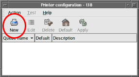
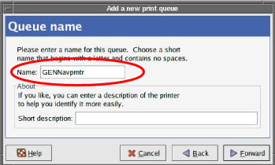

Operating Documentation
Direction 5440001-3, Rev# 6
Signa HDxt Service Methods
Module Version 2.0, Version Date 6/1/09
Operating Documentation |
| Required Persons | Preliminary Reqs | Procedure | Finalization |
|---|---|---|---|
| 1 | Not Applicable | 15 mins | Not Applicable |
| Condition | Reference | Effectivity |
|---|---|---|
Signa Software is installed and configured. | - | - |
If Signa applications are up and running, restart the computer by right-mouse clicking on [Service Tools], then [System Restart].
From the Signa log in screen, type root for the user name and operator for the password. (Do not access Guided Install.)
Right-mouse click to display the Printer configuration screen shown in Illustration 1.
Illustration 1: Configure Printers

Click on the New icon shown in Illustration 1.
Click [Forward].
Enter the Name of the Codonics Printer as GENNavprntr (case sensitive), shown in Illustration 2. (This exact name must be used for Brainwave. For the SAGE option, the name is not important.)
Illustration 2: Create New Printer Profile

Enter the Queue type as Networked UNIX (LPD), then select [Forward].
Enter the Host Name or IP Address for the server. (Example IP Address: 10.1.11.11.)
Enter the Queue name as 2.a-cvp, then select [Forward].
For the Printer Model, select Postscript printer, then [Forward].
Click [Apply]. The printer test page should print successfully at this time.
To verify SAGE is printing:
Open the SAGE option.
Select File, then Print. A GUI will display.
In the Printer text field, remove the default printer and enter the name of the printer that was used in Step 6.